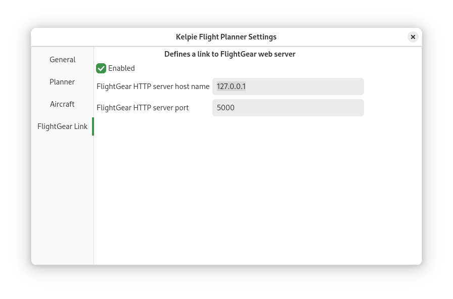

Flightgear Link Preferences¶
This panel enables you to link the planner to a running instance of flightgear.
When linked, the location of your aircaft will be shown on the world map.

The port can be set in the Flightgear launcher or from the command line when launching Flightgear.